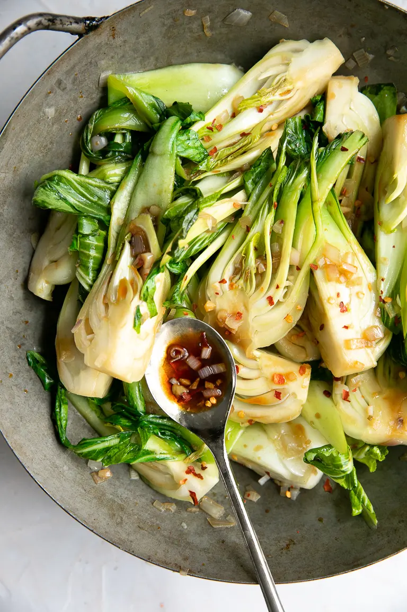

Pak Soi

Being healthy with minimal effort
You're probably not hitting your daily vegetable intake. Add this asian
vegetable to your arsenal for a versatile option that goes well with
anything.
Ingredients
- Pak Soi (or Buok Choy)
- Garlic and ginger
- Soy Sauce and Oyster Sauce
- Some sake
Instructions
- Sizzle the garlic and ginger for a few minutes
- Throw in the pak soi
- Season it
Return to main page